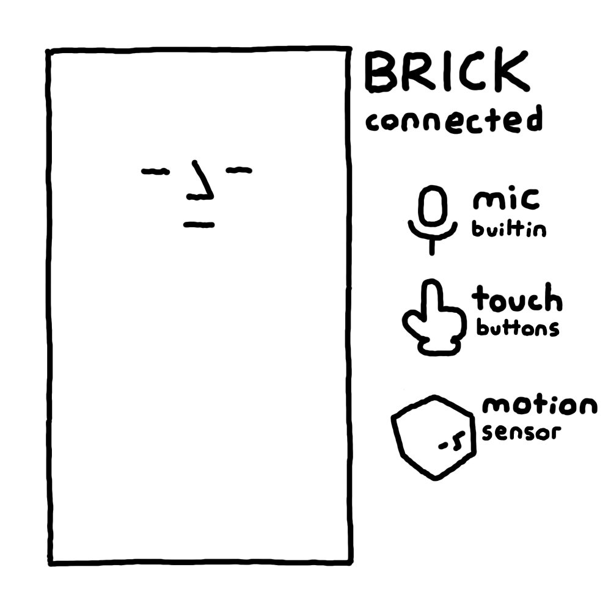
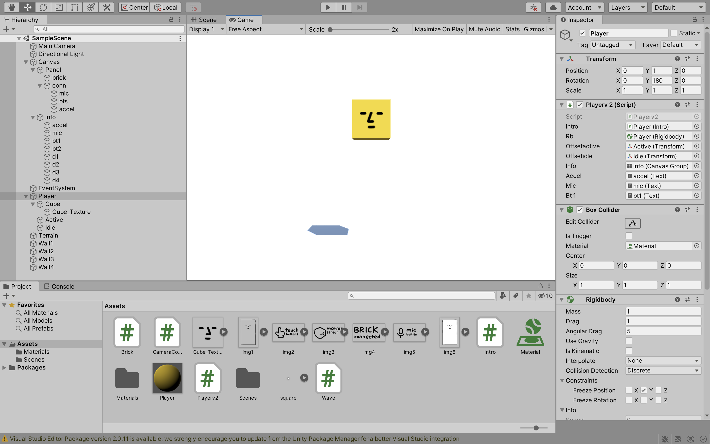
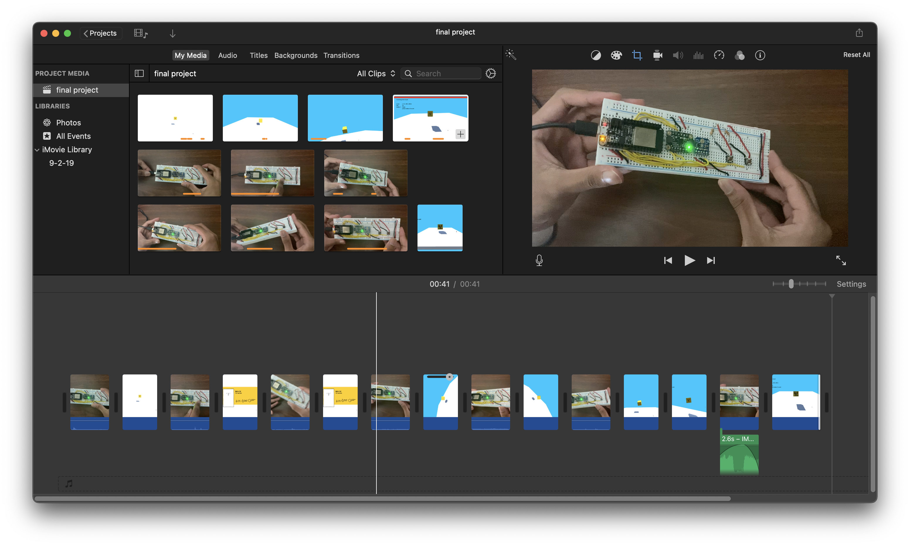

Final Project
Introduction
For my final project I wanted to make a simple controller that can be used to play a game.
The controller would be named "brick" because the breadboard is shaped like a brick.
You would physically interact with the controller to make things happen onscreen.
Controller Build
(Brick)
First I built the controller.
I wanted the controller to be able to sense motion, sound and button presses so I used the lis3dh accelerometer, the spw 2430 microphone,
2 buttons, 2 10k ohm resistors, an esp32 micocontroller, multicolored male wires and a breadboard. The red wires represent voltage connections,
the black wires represent ground connections, and the yellow wires represent analog/ digital data connections.
The images below show the completed controller. The first one shows the controller as it is turned off, and the second one showed it as it is plugged in.
The reason why I used the upper row for voltage and ground connections instead of just the first was to make sure my wiring was clean.
On my first try and building the board I wired the vin for the lis3dh, spw and 2 buttons onto the bottom row and the wires ended up getting really messy and it made
the board less compact. The second reason was because I noticed that when I quickly pressed the buttons the serial window would read no voltage from the
analog pins. I realized that my fingers were sometimes touching the ground and resistor wires and disrupting the circuit, so the next time I built the board I tried
to position the resistors and data connections farther from the button themselves.


Controller Firmware
Compression, UDP
I worked on the controller firmware. I replaced the previous way I sent microcontroller data in old assignments
with a new system that reduced bandwidth usage by more than 50% (named bricktalk).
Instead of sending all sensor data invariably I tried to only send sensor data when it changed
since more than half of the time the x and y acceleration values as well as the microphone volume remained the same.
(the z value always fluctuates even when idle because of gravity, but sometimes it goes unchanged too)
Each bit in the first byte of the controller packet tells the laptop whether or not a specific piece of data is present.
I drew how the packet is organized below. For instance, if the microphone volume remains the same from the previous frame,
bit 7 is cleared in the header byte and the recipient will know not to continue to read 2 nonexistent bytes from its receive buffer.
I did not do anything like this for the buttons because their states are represented by a single bit each in the header byte and
I do not write any additional data for them.
What the actual controller actually does is remain idle and wait for it to be either shaken or have its buttons pressed.
When this happens it transitions to a connection state where it pings the game, and if no response is given for 5 seconds
the controller reverts back to idling. If the connection is successful the controller begins sending non-redundant input to the
game and if it does not receive a keep-alive packet from the game for 5 seconds it disconnects and reverts back to idling.

The brick firmware is below.
*I removed the angle brackets surrounding the initial include statements because they would make the header file names disappear on the website. If you add them back in and enter your network information in the macros below the include statements it should work.
#include WiFi.h
#include WiFiUdp.h
#include Wire.h
#include SPI.h
#include Adafruit_LIS3DH.h
#include Adafruit_Sensor.h
#define ssid **
#define pw **
#define ip **
#define port **
enum id
{
idle,
conn,
sync
};
struct vector
{
int16_t x;
int16_t y;
int16_t z;
};
Adafruit_LIS3DH lis = Adafruit_LIS3DH(A1, 13, A5, 27);
WiFiUDP udp;
uint32_t t1;
uint32_t ct;
uint32_t to;
const uint8_t length = 16;
const uint8_t frame = 10;
const uint16_t disc = 5000;
enum id state;
uint8_t recv[length];
struct vector v1;
uint16_t s1;
void setup()
{
Serial.begin(115200);
while (!Serial)
yield();
WiFi.mode(WIFI_STA);
WiFi.disconnect();
WiFi.begin(ssid, pw);
while (WiFi.status() != WL_CONNECTED)
yield();
pinMode(A0, INPUT);
pinMode(A2, INPUT);
pinMode(A4, INPUT);
lis.begin(0x18);
state = idle;
logstate();
}
void loop()
{
uint32_t t2 = millis();
if (t2 - t1 >= frame)
{
const uint8_t status = WiFi.status();
switch (state)
{
case idle:
{
bool* b = ibts();
struct vector v = ilis();
if (*b || *(b + 1) || sqrt(sq(v.x) + sq(v.y) + sq(v.z)) > 150)
{
udp.begin(port);
state = conn;
logstate();
}
}
break;
case conn:
{
ct += frame;
if (status == WL_CONNECTED && ct < disc)
{
while (udp.parsePacket())
{
udp.read(recv, length);
if (*recv == conn)
{
udp.flush();
ct = 0;
state = sync;
logstate();
break;
}
}
udp.beginPacket(ip, port);
udp.write(udpid(conn));
udp.endPacket();
}
else
{
udp.stop();
ct = 0;
state = idle;
logstate();
}
}
break;
case sync:
{
if (status == WL_CONNECTED)
{
to += frame;
while (udp.parsePacket())
{
udp.read(recv, length);
if (*recv == sync)
{
udp.flush();
to = 0;
break;
}
}
if (to < disc)
{
bool* b = ibts();
struct vector v2 = ilis();
const uint32_t st = millis();
uint16_t max = 0;
uint16_t min = 1024;
while (millis() - st < 20)
{
uint16_t sample = analogRead(A4);
if (sample < 1024)
{
if (sample > max)
max = sample;
else if (sample < min)
min = sample;
}
}
uint16_t s2 = max - min;
const bool rx = v1.x != v2.x;
const bool ry = v1.y != v2.y;
const bool rz = v1.z != v2.z;
const bool rs = s1 == s2;
uint8_t hdr = udpid(sync);
bitWrite(hdr, 2, *b);
bitWrite(hdr, 3, *(b + 1));
bitWrite(hdr, 4, rx);
bitWrite(hdr, 5, ry);
bitWrite(hdr, 6, rz);
bitWrite(hdr, 7, rs);
udp.beginPacket(ip, port);
udp.write(hdr);
if (rx)
udpn(v2.x);
if (ry)
udpn(v2.y);
if (rz)
udpn(v2.z);
if (rs)
udpn(s2);
udp.endPacket();
v1 = v2;
s1 = s2;
break;
}
}
to = 0;
udp.stop();
state = idle;
logstate();
break;
}
}
t1 = t2;
}
}
bool* ibts()
{
static bool bts[2];
bts[0] = digitalRead(A0);
bts[1] = digitalRead(A2);
return bts;
}
struct vector ilis()
{
const uint8_t n = 10;
const int16_t sn = 300;
struct vector v;
int32_t x;
int32_t y;
int32_t z;
for (uint8_t i = 0; i < n; i++)
{
lis.read();
x += lis.x;
y += lis.y;
z += lis.z;
}
x /= n * sn;
y /= n * sn;
z /= n * sn;
v.x = x;
v.y = y;
v.z = z;
return v;
}
uint8_t udpid(uint8_t id)
{
uint8_t hdr = 0;
for (uint8_t i = 0; i < 2; i++)
bitWrite(hdr, i, bitRead(id, i));
return hdr;
}
void udpn(uint16_t n)
{
for (uint8_t i = 0; i < sizeof(uint16_t); i++)
udp.write((byte)(n >> (i * 8)));
}
void logstate()
{
Serial.println();
Serial.println(state);
}
Below is a video showing a simple console socket program reading the header byte bits and displaying them on the window.
Note that the website firmware will not work with the console socket program because I manually set the state to sync for debugging in the setup function call.
If you follow the instructions below it should work though.
lis.begin(0x18);
state = idle;
//change to this vvv
lis.begin(0x18);
udp.begin(port);
state = sync;
I also included the code for the console socket program that displays the bitfield in the video.
using System;
using System.Net;
using System.Net.Sockets;
namespace fp_console
{
class Program
{
const int length = 16;
private static Socket socket = new Socket(AddressFamily.InterNetwork, SocketType.Dgram, ProtocolType.Udp);
private static byte[] recv = new byte[length];
private static byte[] send = new byte[length];
static void Main(string[] args)
{
socket.Blocking = false;
socket.Bind(new IPEndPoint(IPAddress.Any, 47777));
if (!socket.IsBound)
return;
bool run = true;
while (run)
{
while (socket.Available > 0)
{
if (socket.Receive(recv) > length)
break;
byte hdr = recv[0];
Console.WriteLine("bt1: " + ((hdr >> 2) & 1));
Console.WriteLine("bt2: " + ((hdr >> 3) & 1));
Console.WriteLine("lisx: " + ((hdr >> 4) & 1));
Console.WriteLine("lisy: " + ((hdr >> 5) & 1));
Console.WriteLine("lisz: " + ((hdr >> 6) & 1));
Console.WriteLine("spw: " + ((hdr >> 7) & 1));
}
}
}
}
}
A 1 (set bit) means the controller is sending that instance of data, while a 0 (cleared bit) means the controller has omitted that instance of data. You can see the bits for bt1 (button 1) and bt2 (button 2) changing as I press and release the buttons on the controller.
Controller Firmware
Cleanup
I took some time and simplified the controller firmware by replacing the vector structs with arrays
since I hardly used a struct with 3 16 bit integers in particular and instead switched between data types
for different tasks. I also fixed a timing bug caused by adding a fixed time interval to the timer rather than the
actual time that each frame takes (t2 - t1 ms).
I also removed all of the serial debug lines because I was finished debugging the firmware, and I also added
a function for sampling microphone volume to clean the loop sync call. Lastly I adjusted the connection timeout
value to make it more forgiving.
This is what I will stick with for the remainder of the final project, so I am now going to focus on the unity software.
//fp controller v3 sanchay
#include WiFi.h
#include WiFiUdp.h
#include Wire.h
#include SPI.h>
#include Adafruit_LIS3DH.h
#include Adafruit_Sensor.h
#define ssid "***"
#define pw "***"
#define ip "***"
#define port 0
Adafruit_LIS3DH lis = Adafruit_LIS3DH(A1, 13, A5, 27);
WiFiUDP udp;
const uint8_t id_idle = 0;
const uint8_t id_conn = 1;
const uint8_t id_sync = 2;
const uint8_t v_size = 3;
const uint8_t b_size = 16;
const int16_t timeout = 5000;
uint8_t state;
int16_t a1[v_size];
uint8_t recv[b_size];
uint32_t t1;
uint32_t timer;
uint16_t s1;
void setup()
{
WiFi.mode(WIFI_STA);
WiFi.disconnect();
WiFi.begin(ssid, pw);
while (WiFi.status() != WL_CONNECTED)
yield();
pinMode(A0, INPUT);
pinMode(A2, INPUT);
pinMode(A4, INPUT);
lis.begin(0x18);
state = id_idle;
}
void loop()
{
const uint32_t t2 = millis();
const uint32_t t = t2 - t1;
if (t >= 20)
{
const bool wifi = WiFi.status() == WL_CONNECTED;
switch (state)
{
case id_idle:
{
int16_t* a = ilis();
uint8_t* b = ibts();
if (*b || *(b + 1) || sqrt(sq(*a) + sq(*(a + 1)) + sq(*(a + 2))) > 150)
{
udp.begin(port);
state = id_conn;
}
}
break;
case id_conn:
{
timer += t;
if (wifi && timer < timeout)
{
while (udp.parsePacket())
{
udp.read(recv, b_size);
if (*recv == id_conn)
{
udp.flush();
timer = 0;
state = id_sync;
break;
}
}
udp.beginPacket(ip, port);
udp.write(udpid(id_conn));
udp.endPacket();
}
else
idle();
}
break;
case id_sync:
{
timer += t;
if (wifi && timer < timeout)
{
while (udp.parsePacket())
{
udp.read(recv, b_size);
if (*recv == id_sync)
{
udp.flush();
timer = 0;
break;
}
}
const uint8_t* b = ibts();
const int16_t* a2 = ilis();
const uint16_t s2 = ispw();
const uint8_t rx = *a1 != *a2;
const uint8_t ry = *(a1 + 1) != *(a2 + 1);
const uint8_t rz = *(a1 + 2) != *(a2 + 2);
const uint8_t rs = s1 != s2;
uint8_t hdr = udpid(id_sync);
bitWrite(hdr, 2, *b);
bitWrite(hdr, 3, *(b + 1));
bitWrite(hdr, 4, rx);
bitWrite(hdr, 5, ry);
bitWrite(hdr, 6, rz);
bitWrite(hdr, 7, rs);
udp.beginPacket(ip, port);
udp.write(hdr);
if (rx)
udpn(*a2);
if (ry)
udpn(*(a2 + 1));
if (rz)
udpn(*(a2 + 2));
if (rs)
udpn(s2);
udp.endPacket();
for (uint8_t i = 0; i < v_size; i++)
*(a1 + i) = *(a2 + i);
s1 = s2;
}
else
idle();
}
break;
}
t1 = t2;
}
}
void idle()
{
udp.stop();
timer = 0;
state = id_idle;
}
int16_t* ilis()
{
static int16_t a[v_size];
static int32_t v[v_size];
const uint8_t n = 10;
uint8_t i;
for (i = 0; i < n; i++)
{
lis.read();
*v += lis.x;
*(v + 1) += lis.y;
*(v + 2) += lis.z;
}
for (i = 0; i < v_size; i++)
{
*(v + i) /= n * 300;
*(a + i) = *(v + i);
}
return a;
}
uint16_t ispw()
{
const uint32_t st = millis();
uint16_t max = 0;
uint16_t min = 1024;
while (millis() - st < 20)
{
uint16_t sample = analogRead(A4);
if (sample < 1024)
{
if (sample > max)
max = sample;
else if (sample < min)
min = sample;
}
}
return max - min;
}
uint8_t* ibts()
{
static uint8_t b[2];
*b = digitalRead(A0);
*(b + 1) = digitalRead(A2);
return b;
}
uint8_t udpid(uint8_t id)
{
uint8_t hdr = 0;
bitWrite(hdr, 0, bitRead(id, 0));
bitWrite(hdr, 1, bitRead(id, 1));
return hdr;
}
void udpn(int16_t n)
{
udp.write((byte)n);
udp.write((byte)(n >> 8));
}
Brick Class
Unity
I wrote a unity class named Brick to abstract controller connectivity.
It takes a callback as a constructor parameter so the caller can do anything it wants
when a controller connects to the game. When the class receives a packet from the controller
it reads the header byte bits to identify the contents of the packet and reads them.
The class exposes controller acceleration, microphone volume
and button states. When the game is finished with the controller you can call the disconnect method
to disconnect from the controller.
using System;
using System.Net;
using System.Net.Sockets;
using UnityEngine;
public class Brick
{
private const int length = 16;
private Socket socket;
private byte[] recv;
private byte[] send;
public delegate void callback();
private callback conn;
private float t1;
private bool connected;
private const byte id_conn = 1;
private const byte id_sync = 2;
private EndPoint rep;
private int rhash;
public bool input_button_1;
public bool input_button_2;
public Vector3 accel;
public Vector3 delta_accel;
private Vector3 paccel;
public ushort input_mic;
public Brick(callback _conn)
{
socket = new Socket(AddressFamily.InterNetwork, SocketType.Dgram, ProtocolType.Udp);
recv = new byte[length];
send = new byte[length];
socket.Bind(new IPEndPoint(IPAddress.Any, 47777));
conn = _conn;
accel = Vector3.zero;
paccel = Vector3.zero;
delta_accel = Vector3.zero;
}
public void disconnect()
{
if (connected)
{
rep = null;
rhash = 0;
connected = false;
}
}
public void Update(float _t2)
{
if (!socket.IsBound)
return;
while (socket.Available > 0)
{
EndPoint ep = new IPEndPoint(IPAddress.Any, 0);
if (socket.ReceiveFrom(recv, ref ep) > length)
break;
int hash = ep.GetHashCode();
byte hdr = recv[0];
switch (hdr & 0b00000011)
{
case id_conn:
if (!connected || hash == rhash)
{
if (!connected)
{
rep = ep;
rhash = hash;
conn();
connected = true;
}
Send(id_conn);
}
break;
case id_sync:
if (connected && hash == rhash)
{
int index = -1;
input_button_1 = ((hdr >> 2) & 1) != 0;
input_button_2 = ((hdr >> 3) & 1) != 0;
if (((hdr >> 4) & 1) != 0)
accel.x = BitConverter.ToInt16(recv, index += 2);
if (((hdr >> 5) & 1) != 0)
accel.y = BitConverter.ToInt16(recv, index += 2);
if (((hdr >> 6) & 1) != 0)
accel.z = BitConverter.ToInt16(recv, index += 2);
if (((hdr >> 7) & 1) != 0)
input_mic = BitConverter.ToUInt16(recv, index += 2);
delta_accel = accel - paccel;
paccel = accel;
}
break;
}
}
if (connected && _t2 - t1 >= 0.3f)
{
Send(id_sync);
t1 = _t2;
}
}
private void Send(byte _id)
{
send[0] = _id;
socket.SendTo(send, 0, 1, SocketFlags.None, rep);
}
}
Assets
Unity
After that I drew some assets using photoshop for unity.
I drew 3 icons and text to represent the features of the controller. I wanted
the icons to pop up the moment the controller connects to the game. I also drew a box with a face on it
and a title. Below I put all the images together into one.
I also reused the face asset from the final project assignment to once again use as a face for the player.

Game Software
Unity
I imported the assets into unity and wrote some classes to make the game work.
The intro class is responsible for prompting the player with the controller connection and controller features
before transitioning from the intro into the game.
The camera controller class just smoothly moves and rotates the camera to a provided target. It also smoothly changes its
field of view.
The playerv2 class collects input from its instance of the brick class to control the player and the camera.
It references the show method in the intro class as the on connect callback for the brick instance so that when the controller
connects to the game the intro begins. When the controller is shaken or its buttons are pressed the intro moves away and hides.
I also wrote the short wave class for making it easy to oscillate objects.
I included all the aforementioned classes below.
public class Intro : MonoBehaviour
{
[SerializeField] private CanvasGroup panel;
[SerializeField] private Camera cam;
private float t1;
private Vector3 p1;
private Vector3 p2;
private Color c1;
private Color c2;
private bool lerp = false;
private bool hide = false;
void Start()
{
p1 = panel.transform.localPosition;
p2 = new Vector3(p1.x, 0, p1.z);
c1 = Color.white;
c2 = Color.white;
panel.gameObject.SetActive(false);
}
private bool smooth()
{
float t = (Time.time - t1) / 0.5f;
panel.transform.localPosition = Vector3.Lerp(p1, p2, t * t);
cam.backgroundColor = Color.Lerp(c1, c2, t);
bool end = t >= 1;
if (end)
{
panel.transform.localPosition = p2;
cam.backgroundColor = c2;
p1 = p2;
c1 = c2;
t1 = 0;
}
return end;
}
void Update()
{
if (lerp)
{
if (smooth())
{
p2 = new Vector3(p1.x, -1000, p1.z);
c2 = new Color(0, 200f / 255f, 1f);
lerp = false;
}
}
if (hide)
{
if (smooth())
{
hide = false;
panel.gameObject.SetActive(false);
}
}
}
public void Hide()
{
if (!lerp && panel.gameObject.activeSelf)
{
hide = true;
t1 = Time.time;
}
}
public void Show()
{
panel.gameObject.SetActive(true);
lerp = true;
t1 = Time.time;
}
}
public class CameraController : MonoBehaviour
{
public static Transform target;
public static float fov;
public const float defaultfov = 80;
[SerializeField] private Camera cam;
private void Start()
{
fov = defaultfov;
self();
}
private void Update()
{
self();
Vector3 cv = Vector3.zero;
float dt = Time.deltaTime;
transform.position = Vector3.SmoothDamp(transform.position, target.position, ref cv, dt * 4);
transform.rotation = Quaternion.Lerp(transform.rotation, target.rotation, dt * 8);
cam.fieldOfView = Mathf.Lerp(cam.fieldOfView, fov, dt * 10);
}
private void self()
{
if (!target)
target = transform;
}
}
public class Wave : MonoBehaviour
{
private static float n;
private float myn;
private Vector3 p1;
[SerializeField] private float amp;
[SerializeField] private int frq;
[SerializeField] private bool x;
private void Start()
{
p1 = transform.localPosition;
myn = n++;
}
private void Update()
{
Vector3 p = p1;
float offset = amp * Mathf.Sin(frq * Time.time + myn);
p.y += offset;
if (x)
p.x -= offset;
transform.localPosition = p;
}
}
public class Playerv2 : MonoBehaviour
{
private Brick brick;
private bool idle;
[SerializeField] private Intro intro;
[SerializeField] private Rigidbody rb;
[SerializeField] private Transform offsetactive;
[SerializeField] private Transform offsetidle;
[SerializeField] private CanvasGroup info;
[SerializeField] private Text accel;
[SerializeField] private Text mic;
[SerializeField] private Text bt1;
[SerializeField] private SpriteRenderer face;
[SerializeField] private Sprite blow;
[SerializeField] private Sprite calm;
private void Start()
{
brick = new Brick(intro.Show);
}
private void active()
{
idle = false;
CameraController.target = offsetactive;
CameraController.fov = 100;
}
private void Update()
{
brick.Update(Time.time);
if (!brick.connected)
return;
float am2 = brick.accel.magnitude;
float dt = Time.deltaTime;
if (brick.bt1 || brick.bt2 || am2 >= 150)
{
active();
intro.Hide();
}
if (brick.bt1)
{
idle = true;
info.gameObject.SetActive(true);
info.alpha = 1;
CameraController.target = offsetidle;
CameraController.fov = 80;
}
if (brick.bt2)
{
info.alpha = 0;
info.gameObject.SetActive(false);
active();
}
if (idle)
{
accel.text = brick.accel.ToString();
mic.text = brick.mic.ToString();
bt1.text = brick.bt1.ToString();
}
if (am2 != 0)
{
float roll = Mathf.Atan(brick.accel.y / Mathf.Sqrt(Mathf.Pow(brick.accel.x, 2) + Mathf.Pow(brick.accel.z, 2))) * Mathf.Rad2Deg;
float pitch = Mathf.Atan(-brick.accel.x / Mathf.Sqrt(Mathf.Pow(brick.accel.y, 2) + Mathf.Pow(brick.accel.z, 2))) * Mathf.Rad2Deg;
Quaternion q = Quaternion.Euler(roll, 0, pitch);
transform.rotation = Quaternion.Lerp(transform.rotation, q, dt * 10);
}
if (brick.mic >= 500)
{
face.sprite = blow;
transform.position = Vector3.zero;
transform.localScale *= 1.2f;
}
else
face.sprite = calm;
transform.localScale = Vector3.Lerp(transform.localScale, Vector3.one, dt * 10);
}
}
public class CameraController : MonoBehaviour
{
public static Transform target;
public static float fov;
public const float defaultfov = 80;
[SerializeField] private Camera cam;
private void Start()
{
fov = defaultfov;
self();
}
private void Update()
{
self();
Vector3 cv = Vector3.zero;
float dt = Time.deltaTime;
transform.position = Vector3.SmoothDamp(transform.position, target.position, ref cv, dt * 4);
transform.rotation = Quaternion.Lerp(transform.rotation, target.rotation, dt * 8);
cam.fieldOfView = Mathf.Lerp(cam.fieldOfView, fov, dt * 10);
}
private void self()
{
if (!target)
target = transform;
}
}
This is just a screenshot of the unity project after I was finished everything. You can see the different game objects to the left and the game window at the center. The assets are in the bottom row.

Demo Video
iMovie
After finishing everything I started working on the demo video.
It was difficult to record the game without the framerate dropping a ton so I did multiple takes of the game
and my controller separately.
I included an image of my imovie project below.
